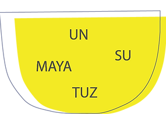

EKMEĞİMİZİ NASIL ÜRETİYORUZ?
HER ŞEY TOHUMLA BAŞLIYOR!
Ekmeğimizi eski ve yerel buğdayların taze olarak öğütülmüş unlarından üretiyoruz. Seçtiğimiz buğdayların her birinin bir hikayesi, kendine has tadı ve özellikleri var. Yerel çeşitliliğin sürmesi için, yerel buğdaylarla çalışmanın önemli olduğunu biliyoruz.

TAŞ DEĞİRMENDE ÖĞÜTÜYORUZ
Tam buğday unlarımızı kendi taş değirmenimizde öğütüyoruz. Tam buğday unun, beyaz una göre daha besleyici ve doyurucu olduğunu; lif, mineral ve vitaminlerin, buğdayın rüşeym ve kepek kısmında bulunduğunu biliyoruz.
ZEHİR KULLANMADAN YETİŞTİRİYORUZ
Buğdaylarımızı kendimiz yetiştiriyoruz ve ot-böcek öldürücü kimyasallar kullanmıyoruz çünkü sağlıklı tohumların ve sağlıklı toprağın, sürdürülebilir bir tarımın tek yolu olduğunu düşünüyoruz.
EKŞİ MAYALI
Ekmeğimizi sadece ekşi maya ve tam buğday unuyla yoğuruyor, 18-40 saat kadar süren soğuk ve oda sıcaklığında fermentasyon süreçleri ile daha sağlıklı hale getiriyoruz. Ekşi mayalı ekmeğin sağlık ve besleyicilik bakımından birçok faydası biliniyor: - daha düşük oranlarda ve sindirmesi kolay gluten - daha yüksek vitamin, mineral ve besin değeri - probiyotik özellikler - daha düşük miktarda, minerallerin emilimini zorlaştıran fitik asit.